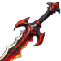
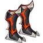
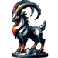

Yamanoth is a dark god you can battle in the Chaos Rift. You can also recruit him in Forbidden Knowledge with 50 of his tomes of power when you have researched all chaos teachings to level 10.
| Flame of the depths | |
|---|---|
| Strike your target for 600% of your damage and decrease their armor by 20% for 3 seconds. Cost: 30 Rage. | |
| Chaotic lure | |
|---|---|
| Force all enemies to attack you and increase your dodge by 50% for 16 seconds. 25 seconds cooldown. Cost: 45 Rage. | |
| Weapon | Chest | Boots | Ring | |
|---|---|---|---|---|
 |
 |
|||
| Wrist | Shoulder | Belt | Relic | |
| Ankh | Rune | Idol | ||
 |
||||
| Talisman | Necklace | Trinket | ||
In the infinite and churning darkness of Pandemonium, a realm where chaos reigns and order dares not tread, Yamanoth, the God of Chaos and Disorder, presided over his domain with a mercurial delight that was as unpredictable as the ever-shifting landscape around him. His citadel, the Chaos Spire, was a monument to his power, with towers that spiraled skyward in defiance of the natural laws that governed lesser realms.
On this particular day — or night, for time held little meaning in Pandemonium — Yamanoth found himself bored. The monotony of his unchallenged rule had dulled the edge of his cruelty and sparked a desire for entertainment that not even the wildest demonic bacchanals could satisfy.
"Summon the court," Yamanoth commanded, his voice a tempest that stirred the black clouds above. His servants, creatures born from the darkest nightmares, scurried to obey, their forms blurring in and out of existence as they moved.
As the court gathered, a menagerie of demons and lost souls, Yamanoth's eyes glinted with the fires of caprice. "Today," he announced, "we play a game of fate and will." His smile was a slash of malice. "I will split myself in twain, embodying both chaos and a sliver of order, and we shall see which part of me you can please more."
With a snap of his fingers, the air split with the sound of tearing reality, and from Yamanoth's form emerged two beings. One was dark as the void, a shadow that seemed to suck the light from the air, while the other bore a silvery gleam, like the edge of a well-honed blade.
The court watched, transfixed, as the two forms circled each other, each embodying a part of Yamanoth's vast power. The dark form cackled, spreading waves of entropy that turned the ground to sludge and the air to poisonous fumes. The silver form, in contrast, restored balance with each step, solidifying the ground and purifying the air, imposing a semblance of order upon the chaos.
"To my subjects," Yamanoth's dual voices echoed, both harmonious and discordant, "you will present offerings to both my aspects. Choose wisely, for your fate will hinge upon your choice." One by one, the denizens of the court approached. Some, drawn by fear or madness, offered tributes of broken laws and twisted deeds to the dark form, which laughed and devoured their offerings with glee. Others, perhaps hoping to curry favor or driven by a desperate longing for stability, gave tributes of symmetry and reason to the silver form, which nodded in acknowledgment, its face impassive.
As the game unfolded, Yamanoth — both parts of him — judged their offerings. The dark form often responded with cruel twists, turning the demons' gifts against them in ironic punishments. The silver form, though more measured, enforced harsh penalties for any deviation from its imposed order.
Finally, as the game drew to a close, the two aspects merged once again, reuniting into the singular form of Yamanoth. His laughter boomed through the citadel, filled with genuine amusement. "You see," he proclaimed, his voice reverberating off the twisted spires of his domain, "chaos and order, cruelty and fairness — they are all but facets of my will. Today you have entertained me, and that is all that matters."
The court, both relieved and terrified, could only bow deeply, whispering praises to their capricious god. For they knew that in the realm of Yamanoth, nothing was ever certain, and everything was subject to the whims of their lord — the embodiment of chaos and, perhaps just for a fleeting moment, a semblance of order.
{kind=link}
{kind=link}
{kind=link}
{kind=link}
{kind=link}
{kind=link}
{kind=link}
{kind=link}
{kind=link}
{kind=link}
{kind=link}
{kind=link}
{kind=link}
{kind=link}
{kind=link}
{kind=link}
{kind=link}